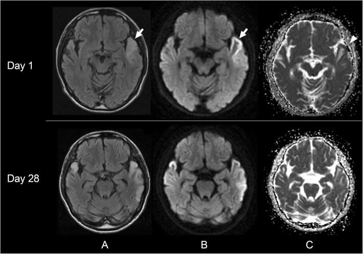
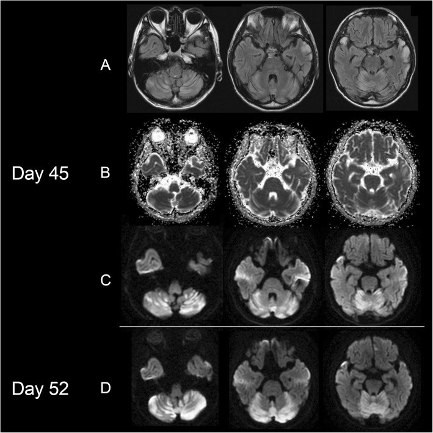
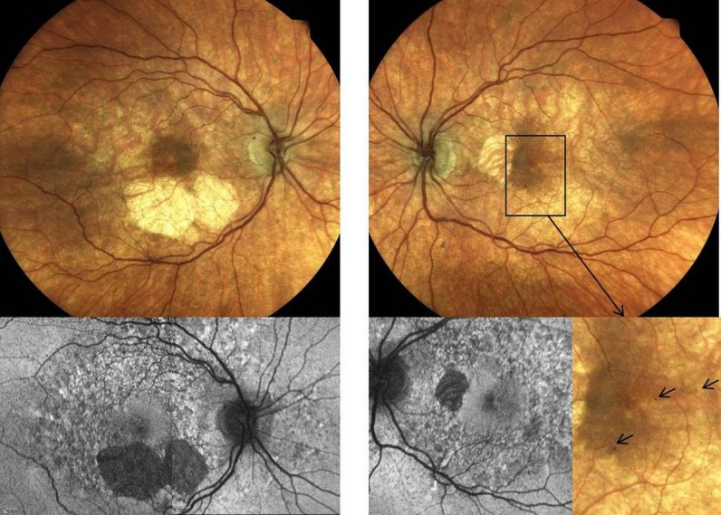
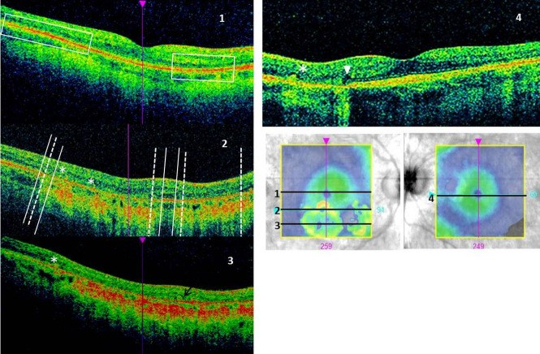
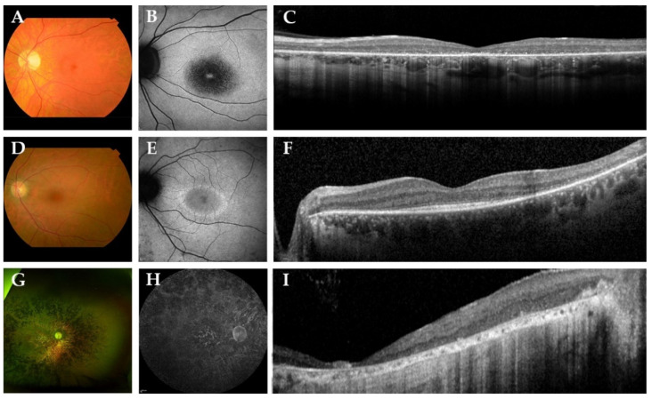
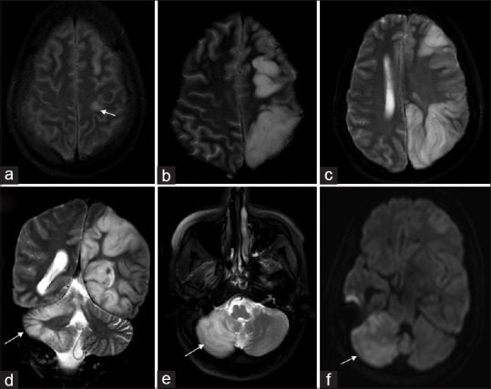
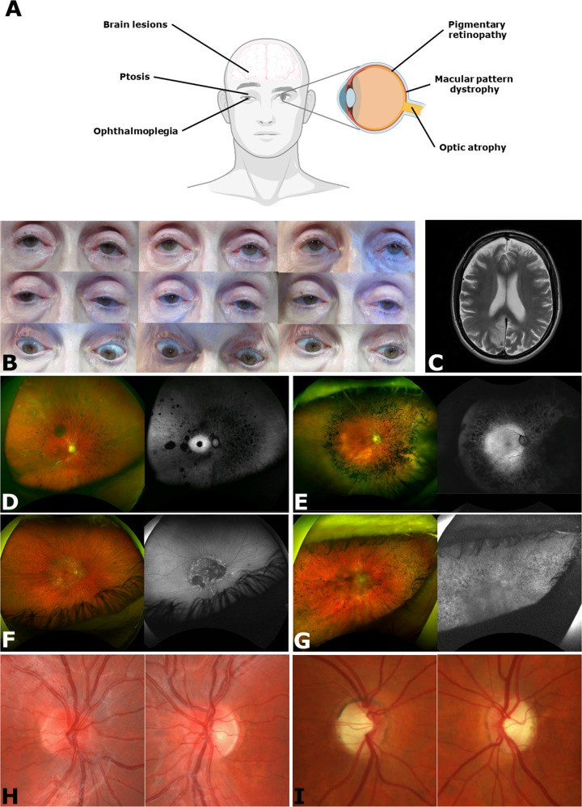

477 — Bệnh ty thể có biểu hiện THỊ GIÁC & TAI: MELAS, MIDD, POLG, PHARC / Mitochondrial disease with visual and auditory involvement
Tags: pattern:benh-ty-the pattern:khong-theo-lanh-tho vung:vo-nao vung:tieu-nao vung:vong-mac vung:than-kinh-thi protocol:MRI-DWI-ADC-MRS protocol:OCT-FAF-ERG protocol:audiometry-ABR
Mức chắc chắn (certainty): tổng hợp y văn (literature synthesis) — mỗi dòng số liệu đều lấy từ bài gốc có PMCID; ca hình ảnh là ca nguyên văn (đọc trực tiếp mô tả trong bài nguồn), không suy diễn thêm.
Vì sao một bài CĐHA lại gộp não + mắt + tai? Ty thể là "nhà máy ATP" của mọi tế bào, nhưng tổn thương biểu hiện rõ nhất ở mô tiêu thụ oxy cao nhất: vỏ não, võng mạc (RPE/ngoài võng mạc), dây VIII và cơ tim. Vì vậy cùng một biến thể gen (điển hình m.3243A>G của MT-TL1) có thể cho cơn đột quỵ giả (stroke-like episode — SLE) trên MRI, loạn dưỡng hoàng điểm dạng pattern trên đáy mắt/FAF/OCT, và điếc tiếp nhận hai bên trên thính lực đồ. Bỏ một trong ba hệ = chuỗi chẩn đoán đứt.
1. Tổng quan bệnh học – cơ chế hình ảnh
Di truyền và ngưỡng biểu hiện (threshold effect). mtDNA đột biến tồn tại lẫn với mtDNA lành trong cùng tế bào (heteroplasmy). Triệu chứng xuất hiện khi tỷ lệ đột biến trong mô vượt ngưỡng — với MELAS, bài tổng quan mắt ghi heteroplasmy 50–90% cho kiểu hình MELAS điển hình (Chen BS et al. 2023, PMC10397317). Ca MELAS có biểu hiện tiểu não dưới đây chỉ 17% heteroplasmy trong bạch cầu mà vẫn có tổn thương não — vì mô đích (não) có thể có heteroplasmy cao hơn hẳn máu; đừng dùng heteroplasmy máu để loại trừ bệnh.
TẠI SAO hình ảnh MELAS trông như vậy — cơ chế 4 bước:
- Chuỗi hô hấp tổng hợp ATP kém → thiếu năng lượng cục bộ;
- Bơm Na⁺/K⁺-ATPase thất bại → mất phân cực màng → tăng hưng phấn thần kinh (co giật, lan dọc vỏ não theo kiểu "spreading" chứ không theo động mạch);
- Hàng rào máu–não mở + phù do thấm (vasogenic) → DWI sáng nhưng ADC KHÔNG giảm (đây là điểm chốt phân biệt với nhồi máu thiếu máu);
- Chuyển hóa yếm khí → lactat tăng: đỉnh lactat 1,33 ppm trên MRS (doublet, đảo pha ở TE 135–144 ms, cùng pha ở TE 30 ms); lactat dịch não tủy ca nguyên văn 10,2 mmol/L, tỷ lệ lactat/pyruvat 30,9 (Oyama M et al. 2020, PMC7195751).
Vì sao võng mạc bị trước. RPE và lớp ngoài võng mạc là mô có mật độ ty thể cao nhất cơ thể; thiếu ATP → mất chức năng bơm của RPE → ứ sắc tố, teo lớp ngoài, sau đó mỏng lớp tế bào hạch. Trên FAF, hiện tượng đặc trưng là nhiễu hạt lan rộng (diffuse speckled pattern) vượt ra ngoài vùng bất thường thấy trên soi đáy mắt — dấu "occult" này giúp phân biệt với các bệnh hoàng điểm khác (Chen BS et al. 2023, PMC10397317).
Vì sao tai bị. Stria vascularis và tế bào lông ngoài phụ thuộc ATP; tổn thương ốc tai (thanh âm) ± dây VIII → điếc tiếp nhận, thường hai bên, đối xứng, tiến triển, khởi phát có thể trước cả tiểu đường trong MIDD.
Ngưỡng định lượng nền (dùng trong bài):
| Thông số | Con số | Nguồn |
|---|---|---|
| m.3243A>G trong MELAS (gộp) | 78% (KTC 95%: 68–86) | Li Y et al. 2026, PMC13487938 (13 nghiên cứu, 988 người) |
| Vùng não hay tổn thương nhất | thùy thích (temporal) 87% | Li Y et al. 2026, PMC13487938 |
| Co giật / tăng lactat | 89% / 81% | Li Y et al. 2026, PMC13487938 |
| Heteroplasmy kiểu MELAS | 50–90% | Chen BS et al. 2023, PMC10397317 |
| Hoàng điểm dạng pattern của MIDD — tuổi phát hiện | trung bình 46,5 tuổi (27–71) | Chen BS et al. 2023, PMC10397317 |
| PHARC — tần suất từng dấu hiệu | đa dây thần kinh 91%, điếc 86%, thất điều 74%, viêm võng mạc sắc tố 82%, đục thủy tinh thể 86% | Harutyunyan L et al. 2024, PMC11539745 (58 bệnh nhân/37 gia đình) |
2. Mẫu hình + chẩn đoán phân biệt theo vị trí (gamut)
A. Vỏ não — tổn thương "không theo lãnh thổ mạch" (non-territorial):
- MELAS (m.3243A>G, cũng gặp m.13513G>A, m.3271T>C…): vỏ thùy thích/thùy đỉnh–chẩm, lan dọc vỏ qua nhiều lãnh thổ, tổn thương "di cư" (migratory) giữa các đợt; tiểu não: dọc các lá tiểu não (folia), không vào nhân sâu/cuống tiểu não (Oyama M et al. 2020, PMC7195751).
- POLG-related (nDNA): tổn thương vỏ quanh hồi trước trung tâm (perirolandic), có thể kèm hiện tượng chéo lấn (crossed cerebellar diaschisis) — bán cầu tiểu não đối bên giảm tưới máu/hạn chế khuếch tán (Muthusamy K et al. 2022, PMC9764922).
- Bệnh thể vùi nội nhân tế bào thần kinh (NIID) — cạm bẫy số 1: DWI sáng dải vỏ não/bán cấp, hình ảnh gần như trùng MELAS; bài so sánh trực tiếp cho thấy hai bệnh khác nhau về phân bố và cách lan (Shi Y et al. 2024, PMC11651200 — CC BY-NC-ND, chỉ dẫn link); bài "pitfall" cũng nhấn mạnh NIID bị chẩn đoán nhầm thành MELAS (Liu X et al. 2026, PMC13005549).
- Viêm não do virus (HSV): thùy thích nhưng hai bên, không đối xứng, có xuất huyết và bắt thuốc cản quang, ADC giảm; ca MELAS dưới đây từng điều trị acyclovir + ức chế miễn dịch 45 ngày trước khi đúng chẩn đoán — bài học lâm sàng: đáp ứng kém với acyclovir + lactat cao → nghĩ ty thể.
B. Chất xám sâu / thân não (mẫu hình "chuyển hóa"):
- POLG (thể ataxia–neuropathy): tăng tín hiệu đối xứng hai bên ở đồi thị lưng–giữa (dorsomedial thalami) và nhân răng/nhân tiểu não sâu (Alhatou A et al. 2026, PMC13681239; chỉ dẫn link ảnh webp).
- Leigh, KSS/LS, bệnh ty thể do POLG khởi phát muộn: đồi thị, thân não, nhân nền — đối xứng là chìa khóa.
C. Hoàng điểm/võng mạc — gamut "loạn dưỡng hoàng điểm dạng pattern":
- MIDD: hoàng điểm dạng pattern + đái tháo đường + điếc; FAF nhiễu hạt lan rộng, hoàng điểm trung tâm còn được bảo tồn tới giai đoạn muộn (Chen BS et al. 2023, PMC10397317).
- PHARC (ABHD12, lặn): viêm võng mạc sắc tố + đục thủy tinh thể + đa dây thần kinh + thất điều + điếc (mã ORPHA171848).
- Bệnh võng mạc đái tháo đường: có vi phình mạch, xuất tiết cứng, xuất huyết — MIDD thì KHÔNG có (tần suất bệnh võng mạc ĐTĐ ở MIDD thấp hơn ĐTĐ typ 2 cùng thời gian bệnh).
- Teo hắc mạc (choroideremia), dystrophia retinae pigmentosa, bệnh Stargardt, độc tính thuốc (HCQ, deferoxamine) — xem bài 484/487/489.
D. Thần kinh thị (optic nerve): DOA/OPA1 (teo thị hai bên, không đau, giảm thị lực từ từ), LHON (nam trẻ, mất thị lực trung tâm cấp–bán cấp tuần tự hai mắt), teo thị trong MELAS/MIDD — bắt buộc đo RNFL/GCL bằng OCT để định lượng (bài 434/439).
3. Bảng so sánh phân biệt (ma trận đối chiếu)
3.1. Tổn thương vỏ não "không theo lãnh thổ mạch"
| Thực thể (entity) | Hình ảnh điển hình (DWI/FLAIR/ADC) | Chốt vào (rule-in) | Chốt loại (rule-out) | Gợi ý xác nhận |
|---|---|---|---|---|
| MELAS | Vỏ thùy thích/đỉnh–chẩm, lan dọc vỏ qua nhiều lãnh thổ, DWI sáng + ADC không giảm, teo não tiến triển | Lan qua đường phân thùy mạch + ADC không giảm + lactat dịch não tủy cao | ADC giảm rõ + tổn thương khu trú đúng một lãnh thổ → nhồi máu | MRS đỉnh 1,33 ppm, lactat máu/dịch não tủy, gen mtDNA (m.3243A>G) |
| Nhồi máu thiếu máu não | Khu trú một lãnh thổ động mạch, DWI sáng + ADC giảm | ADC giảm rõ so với vỏ não đối bên trong cửa sổ 0–72 giờ + mạch máu tương ứng tắc/hẹp | Tổn thương bắc cầu qua nhiều lãnh thổ → nghĩ ty thể | CTA/MRA, tưới máu (MELAS thường tăng tưới máu, nhồi máu giảm); cut-off ADC tuyệt đối phụ thuộc máy — chưa rõ, cần tra |
| NIID | DWI sáng dải vỏ não/bán cấp hai bên, đối xứng, không theo lãnh thổ | Tổn thương dải vỏ–bán cấp đối xứng + không tăng lactat | Có lactat cao + lan "di cư" từng đợt → MELAS | Gen NOTCH2NLC, sinh thiết da |
| POLG | Vỏ quanh hồi trước trung tâm, có thể hạn chế khuếch tán thật, kèm diaschisis tiểu não chéo | Tổn thương perirolandic + bán cầu tiểu não đối bên bất thường | Không có bất thường đối bên + tổn thương nhiều thùy rời rạc → MELAS | Gen POLG, tránh valproat, men gan |
| Viêm não HSV | Thùy thích ± trán dưới, hai bên không đối xứng, xuất huyết, bắt thuốc | Xuất huyết + bắt thuốc cản quang + sốt cấp | Không bắt thuốc, không xuất huyết, lactat cao → ty thể | PCR HSV dịch não tủy |
3.2. Loạn dưỡng hoàng điểm/võng mạc trong bệnh ty thể
| Thực thể (entity) | Đáy mắt + FAF + OCT | Chốt vào (rule-in) | Chốt loại (rule-out) | Gợi ý xác nhận |
|---|---|---|---|---|
| MIDD | Pattern dystrophy: sắc tố quanh hoàng điểm, FAF nhiễu hạt lan rộng vượt vùng tổn thương, OCT mỏng lớp ngoài + RPE, OCT-A giảm mật độ mao mạch sâu | Đái tháo đường + điếc hai bên + FAF nhiễu hạt | Có vi phình mạch/xuất tiết cứng → bệnh võng mạc ĐTĐ | m.3243A>G; ERG 30 Hz flicker chậm |
| PHARC | Viêm võng mạc sắc tố (đốm xương, teo RPE), đục thủy tinh thể sớm | RP + đa dây thần kinh + thất điều + điếc (đủ bộ) | Chỉ RP đơn thuần, không thần kinh → RP cô lập/Usher | ABHD12 (lặn), ERG, EMG |
| Usher | RP + điếc tiếp nhận bẩm sinh/sớm | Điếc bẩm sinh + RP, không đa dây thần kinh | Có thất điều tiến triển + đa dây thần kinh → PHARC | Gen Usher (MYO7A…), tiền đình |
| Bệnh võng mạc ĐTĐ | Vi phình mạch, xuất huyết/xuất tiết, phù hoàng điểm | Dấu hiệu vi mạch rõ | Không vi phình mạch + FAF nhiễu hạt → MIDD | Soi đáy mắt giãn đồng tử, OCT |
| Độc tính HCQ | Vòng sáng quanh hoàng điểm (pericentral ring) trên FAF, mất đoạn parafoveal trên OCT | Tiền sử HCQ ≥ 5 năm + liều > 5 mg/kg/ngày | Không dùng thuốc → loại | Bài 484/487 |
4. Protocol chụp + hệ phân độ/điểm chuẩn hóa
4.1. MRI sọ khi nghi SLE (bắt buộc đủ bộ):
- DWI (b = 1000) + ADC map — không được chỉ đọc DWI; ADC là câu trả lời cho "nhồi máu hay phù do ty thể".
- FLAIR trục + coronal (đánh giá lan dọc vỏ), T2, SWI (loại xuất huyết — hay gặp ở MELAS cấp).
- MRS đa voxel đặt vào vùng tổn thương và vùng vỏ "bình thường" đối bên; đọc lactat 1,33 ppm ở TE 135–144 ms (đảo pha) — TE 30 ms để xác nhận cùng pha.
- ASL/DSC tưới máu: SLE thường tăng tưới máu (vi mạch giãn), khác nhồi máu (giảm) — hỗ trợ mạnh khi lâm sàng mơ hồ.
- MRA/CTA loại tắc mạch lớn; không cần tiêm cản quang thường quy cho SLE (tổn thương không bắt thuốc đặc hiệu).
4.2. Mắt (multimodal — "không thấy trên soi đáy mắt không có nghĩa là không có"):
- OCT macula (SD-OCT) + FAF rộng góc + OCT-A;
- ERG toàn trường (đáp ứng 30 Hz flicker chậm/giảm biên độ), mfERG, VEP khi thị lực không tương xứng tổn thương;
- OCT RNFL/GCL để theo dõi teo thị (định lượng µm/năm).
4.3. Tai: đo thính lực lưỡi tần, ABR (click + tone burst), OAE/CM, phản xạ cơ bậu (stapedial reflex), ASSR; MRI 3D chuỗi nặng T2 (CISS/FIESTA/DRIVE) khảo sát dây VIII và ốc tai (chi tiết ở bài 478).
4.4. Sơ đồ xử trí "tổn thương vỏ não không theo lãnh thổ mạch + điếc/giảm thị"
flowchart TD
A[Tổn thương vỏ não không theo lãnh thổ mạch] --> B{ADC giảm thật?}
B -->|Có| C[Nghĩ nhồi máu hoặc POLG<br/>kiểm tra mạch máu]
B -->|Không| D{Lan qua nhiều lãnh thổ?}
D -->|Có| E[Nghĩ MELAS<br/>MRS lactat 1,33 ppm]
D -->|Không| F[Loại NIID, viêm não, động kinh kéo dài]
E --> G{Có giảm thị hoặc điếc?}
G -->|Có| H[OCT + FAF + ERG + thính lực + ABR]
G -->|Không| I[Vẫn tầm soát mắt và tai định kỳ]
H --> J{Mắt: pattern dystrophy?}
J -->|Có| K[Nghĩ MIDD<br/>đường huyết HbA1c]
J -->|Không| L{Tai: ABR mất sóng, CM còn?}
L -->|Có| M[Điếc tiếp âm<br/>xem bài 478]
L -->|Không| N[Điếc tiếp nhận ốc tai]
K --> O[Xác nhận gen mtDNA m.3243A>G]
M --> P[Xét nghiệm gen: OTOF, OPA1, WFS1, AIFM1]
4.5. Điểm chuẩn/ngưỡng xử trí (không có "RADS" cho bệnh ty thể — dùng 3 thang sau):
- Heteroplasmy: báo % theo mô (máu/niệu/nước bọt/cơ) — máu thấp không loại trừ; nên xét niệu sediment hoặc mô đích khi nghi cao.
- Tiêu chuẩn MELAS (đồng thuận 2026, Mancuso M et al. 2026, PMC13090769): ≥ 1 cơn SLE + bằng chứng rối loạn chức năng ty thể do biến thể mtDNA gây bệnh; không dùng thuật ngữ "MELAS-like"/"MELAS spectrum"; các chất bổ trợ (L-arginine, L-citrulline, taurine, CoQ10) chưa có bằng chứng — không hứa hẹn với gia đình; khởi động thuốc chống co giật ngay khi nghi co giật trong cơn; corticoid tĩnh mạch có thể có lợi cấp.
- Theo dõi mắt: OCT/FAF mỗi 6–12 tháng; thính lực đồ mỗi năm (MIDD: điếc có thể là dấu hiệu đầu tiên trước đái tháo đường nhiều năm).
5. Biến thể bình thường và cạm bẫy
- Cạm bẫy 1 — đọc DWI mà bỏ ADC: SLE là phù thấm, ADC không giảm (thậm chí tăng) trong giai đoạn cấp. Đọc "DWI sáng = nhồi máu" là nguyên nhân chính của việc bỏ sót MELAS (và của việc điều trị sai hướng).
- Cạm bẫy 2 — "hết tổn thương là hết bệnh": SLE có thể di cư sang vùng khác trong vài tuần; chụp lại là bắt buộc để thấy kiểu lan (Oyama: thùy thích trái → thùy thích phải → tiểu não vào ngày 45).
- Cạm bẫy 3 — NIID: tổn thương dải vỏ–bán cấp đối xứng, không tăng lactat, tiến triển chậm ở người lớn tuổi; đừng gán MELAS chỉ vì DWI sáng vỏ não (Liu X et al. 2026, PMC13005549).
- Cạm bẫy 4 — tiểu não: SLE tiểu não đi dọc các lá (folia) và không vào nhân sâu/cuống — khác nhồi máu vùng PICA/AICA (có địa hướng mạch rõ); ADC tiểu não cũng không giảm (Oyama M et al. 2020).
- Cạm bẫy 5 — mắt: "đáy mắt bình thường" không loại trừ MIDD — tổn thương occult chỉ hiện trên FAF/OCT/ERG. Ngược lại, FAF nhiễu hạt dễ bị đọc thành "nhiễu ảnh" ở mắt khô/đục thủy tinh thể → luôn đối chiếu OCT.
- Cạm bẫy 6 — thuật ngữ: không dùng "MELAS-like"; đồng thuận 2026 yêu cầu bằng chứng biến thể mtDNA gây bệnh mới gọi MELAS (Mancuso M et al. 2026).
- Biến thể bình thường: giãn nhẹ khoang dịch não tủy quanh dây VIII và dây VIII nhỏ hơn dây VII ở một số người không có triệu chứng — khi đo dây VIII phải dùng lát cắt vuông góc ống tai trong và so với bên đối diện; đừng chẩn đoán "thiểu sản dây thần kinh ốc tai" chỉ vì một lát cắt chéo.
6. Tự lượng giá — Blind Quiz
Ca 1 — Nam 47 tuổi, đái tháo đường typ 2, đột ngột mất ngôn ngữ. Nhìn 3 chuỗi ở ngày 1 và ngày 28.

- Gợi ý: bệnh nhân được điều trị acyclovir rồi ức chế miễn dịch nhưng không đỡ.
- Câu hỏi: (1) Tổn thương ở đâu, có theo một lãnh thổ động mạch không? (2) Cột ADC (C) nói gì — có hạn chế khuếch tán thật? (3) Ba chẩn đoán phân biệt và xét nghiệm chốt?
Bấm để hiện đáp án (findings + chẩn đoán)
- Dấu hiệu: FLAIR (A) và DWI (B) tăng tín hiệu vỏ thùy thích trước–bên trái, lan dọc vỏ; trên ADC (C) vùng tổn thương KHÔNG tối (không giảm ADC) → phù thấm (vasogenic), không phải hạn chế khuếch tán. Ngày 28 tổn thương vẫn còn nhưng đã có xu hướng teo vỏ.
- Chẩn đoán: cơn đột quỵ giả do MELAS (stroke-like episode) — m.3243A>G, heteroplasmy bạch cầu 17%.
- Vì sao: mất năng lượng → bơm Na⁺/K⁺-ATPase thất bại → phù thấm, không phải tắc mạch. Xét nghiệm chốt: MRS lactat 1,33 ppm, lactat máu/dịch não tủy, gen mtDNA.
- Phản biện (trung thành nguồn): ca này heteroplasmy máu chỉ 17% — thấp hơn con số "50–90%" của thể điển hình; đừng dùng ngưỡng heteroplasmy máu để loại trừ.
- Nguồn ảnh: Oyama M et al., BMC Neurol 2020, Fig. 1 (PMC7195751), CC BY 4.0.
Ca 2 — Cùng bệnh nhân, ngày 45: thất điều, nói khó. Nhìn hàng FLAIR/DWI/ADC của tiểu não.

- Câu hỏi: Tổn thương tiểu não nằm ở đâu (lá tiểu não hay nhân sâu)? Có hạn chế khuếch tán không? Vì sao điều này quan trọng cho chẩn đoán?
Bấm để hiện đáp án
- Dấu hiệu: tăng tín hiệu dọc các lá tiểu não (folia) hai bên trên FLAIR/DWI; không vào nhân tiểu não sâu hay cuống tiểu não; ADC không giảm.
- Chẩn đoán: SLE tiểu não trong MELAS — cùng cơ chế với tổn thương vỏ đại não.
- Vì sao quan trọng: phân bố theo lá, không theo địa hướng mạch + ADC không giảm giúp loại nhồi máu PICA/AICA; tổn thương tiểu não xuất hiện muộn (ngày 45) chứng minh bệnh di cư theo thời gian.
- Nguồn ảnh: Oyama M et al., BMC Neurol 2020, Fig. 2 (PMC7195751), CC BY 4.0.
Ca 3 — Nữ 47 tuổi, đái tháo đường, điếc, nhìn mờ tăng dần. Không có vi phình mạch trên đáy mắt.

- Câu hỏi: (1) Mô tả tổn thương đáy mắt/FAF. (2) Vì sao không phải bệnh võng mạc đái tháo đường? (3) Xét nghiệm nào chốt chẩn đoán?
Bấm để hiện đáp án
- Dấu hiệu: teo RPE + thay đổi sắc tố vùng hoàng điểm; FAF giảm huỳnh quang ở vùng teo + dạng nhiễu hạt (mottled) vùng hoàng điểm và quanh gai, lan rộng hơn vùng bất thường trên ảnh màu.
- Chẩn đoán: bệnh võng mạc do MIDD (m.3243A>G): BCVA 0,06 logMAR mắt phải / 0,1 logMAR mắt trái; OCT mỏng lớp ngoài + RPE; OCT-A giảm mật độ đám rối mao mạch sâu và choriocapillaris; ERG 30 Hz flicker chậm; sau 1 năm mỏng thêm lớp tế bào hạch.
- Vì sao không phải bệnh võng mạc ĐTĐ: không có vi phình mạch/xuất huyết/xuất tiết cứng, tổn thương là loạn dưỡng hoàng điểm dạng pattern; tần suất bệnh võng mạc ĐTĐ ở MIDD thấp hơn ĐTĐ typ 2 cùng thời gian bệnh.
- Nguồn ảnh: Chwiejczak K et al., GMS Ophthalmol Cases 2023, Fig. 1 (PMC10726563), CC BY 4.0.
Hình OCT của cùng ca (bắt buộc xem cùng FAF — FAF một mình dễ đọc sai):

- Trên SD-OCT: mất/giảm tín hiệu lớp ellipsoid (EZ) và RPE ở vùng teo, còn điểm vàng trung tâm còn tương đối nguyên giai đoạn sớm; các điểm tăng phản xạ trong võng mạc (hyperreflective foci) ở một số lát cắt. Đây là lý do phải chụp OCT chứ không chỉ soi đáy mắt.
- Nguồn ảnh: Chwiejczak K et al., GMS Ophthalmol Cases 2023, Fig. 3 (PMC10726563), CC BY 4.0.
Ca 4 — Bệnh nhân trẻ, đa dây thần kinh + điếc + thất điều + nhìn kém. Nhìn 3 hàng ảnh (3 bệnh nhân).

- Câu hỏi: Bộ ba/tứ chứng nào cần tìm? Gen nào? Phân biệt với bệnh nào hay nhầm nhất?
Bấm để hiện đáp án
- Dấu hiệu: teo RPE/viêm võng mạc sắc tố vùng hoàng điểm (ảnh màu), FAF giảm huỳnh quang dạng đốm/vòng, SD-OCT mất lớp ngoài võng mạc và RPE từng vùng.
- Chẩn đoán: PHARC (Polyneuropathy, Hearing loss, Ataxia, Retinitis pigmentosa, Cataract) — ABHD12 thể lặn, ORPHA171848; 58 bệnh nhân đã báo cáo: đa dây thần kinh 91%, điếc 86%, thất điều 74%, RP 82%, đục thủy tinh thể 86%.
- Phân biệt hay nhầm: Usher (điếc bẩm sinh + RP, không đa dây thần kinh), Refsum (thất điều + RP + điếc nhưng có acid phytanic cao), CMT (đa dây thần kinh nhưng hiếm RP).
- Nguồn ảnh: Nguyen XT et al., Genes (Basel) 2021, Fig. 2 (PMC8467809), CC BY 4.0.
Ca 5 — Bệnh nhân động kinh liên tục, co giật nửa người; MRI cho thấy tổn thương vỏ và bất thường tiểu não ĐỐI BÊN.

- Câu hỏi: Dấu hiệu "perirolandic" là gì? Vì sao tiểu não đối bên lại bất thường? Gen nào cần nghĩ tới và thuốc nào phải tránh?
Bấm để hiện đáp án
- Dấu hiệu: tăng tín hiệu khu trú hồi trước trung tâm trái (a), lan rộng ra vỏ trán–đỉnh–chẩm sau 1 tuần (b–d) kèm hạn chế khuếch tán thật; bán cầu tiểu não phải tăng tín hiệu (d, e) và hạn chế khuếch tán (f).
- Cơ chế: diaschisis tiểu não chéo — mất kết nối vỏ–cầu–tiểu não do tổn thương vỏ/động kinh, không phải di căn hay nhồi máu tiểu não.
- Chẩn đoán/gen: bệnh cảnh POLG (phổ ataxia–neuropathy/Epilepsy): cần xét nghiệm POLG; tránh valproat ở mọi bệnh nhân nghi bệnh ty thể (nguy cơ suy gan), kiểm tra men gan và lactat.
- Nguồn ảnh: Muthusamy K et al., Ann Indian Acad Neurol 2022, Fig. 1 (PMC9764922), CC BY-NC-SA 4.0 (giữ nguyên bản, không cắt/ghép).
Ca 6 — Toàn cảnh: mắt trong bệnh ty thể gồm những gì?

Bấm để hiện đáp án
- Hình tổng quan: sụp mi (CPEO), liệt nhãn cầu, viêm võng mạc sắc tố/loạn dưỡng hoàng điểm, teo thị, đục thủy tinh thể, bất thường đồng tử — mỗi biểu hiện ứng với một nhóm hội chứng (KSS, MELAS, MIDD, LHON, DOA, PHARC).
- Điểm thực hành: bệnh ty thể là chẩn đoán đa hệ — một bệnh nhân "đái tháo đường + điếc" hoặc "động kinh + nhìn mờ" phải được hỏi cả ba hệ và chụp/chẩn đoán song song.
- Nguồn ảnh: Chen BS et al., Eye (Lond) 2023, Fig. 2 (PMC10397317), CC BY 4.0.
Bài liên quan chéo
- 434 – Teo thị do độc–chuyển hóa & LHON
- 437 – Teo thị kèm điếc: OPA1 & WFS1
- 439 – Teo thị di truyền DOA/OPA1 & Wolfram
- 478 – Điếc tiếp âm (ANSD) ở trẻ: ABR/CM/OAE, cấy ốc tai
- 484 – Nhiễm độc võng mạc do hydroxychloroquine
- 487 – Nhiễm độc võng mạc do thuốc khác ngoài HCQ
- 215 – Bệnh chất trắng/mất myelin (gamut tổn thương não đối xứng)
Ảnh
- Toàn bộ ảnh tải từ bài open access trên PMC, ghi nguồn + giấy phép từng file trong
images/CREDITS.md. - Ảnh CC BY-NC-ND (nếu có) giữ nguyên bản, không crop/ghép; ảnh CC BY-NC-SA giữ nguyên bản.
Không dùng để chẩn đoán độc lập khi chưa có người hướng dẫn.